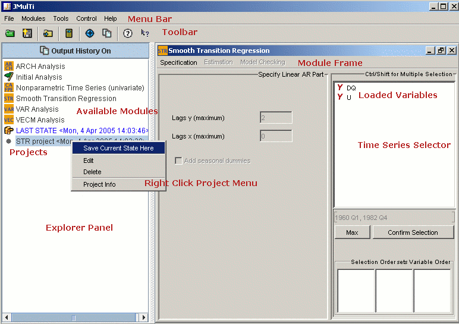

Getting Started
An analysis usually starts with importing a dataset or
opening an existing project. This can be done via
drag and drop over the
explorer panel to the left, or via the  Many components offer access to useful functionality if the RIGHT mouse button is clicked over it, for example projects, time series, data tables, and text components. Also from the explorer panel one can choose the model frame that should be applied. Each module is described in a separate help chapter. The context-sensitive help button can be used to get quick access to the help topic belonging to a certain component by clicking over it. The most fundamental functions of JMulTi to get familiar with: |